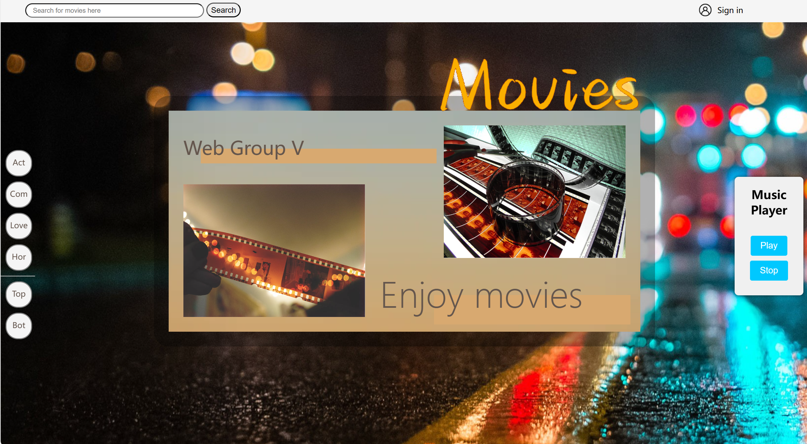
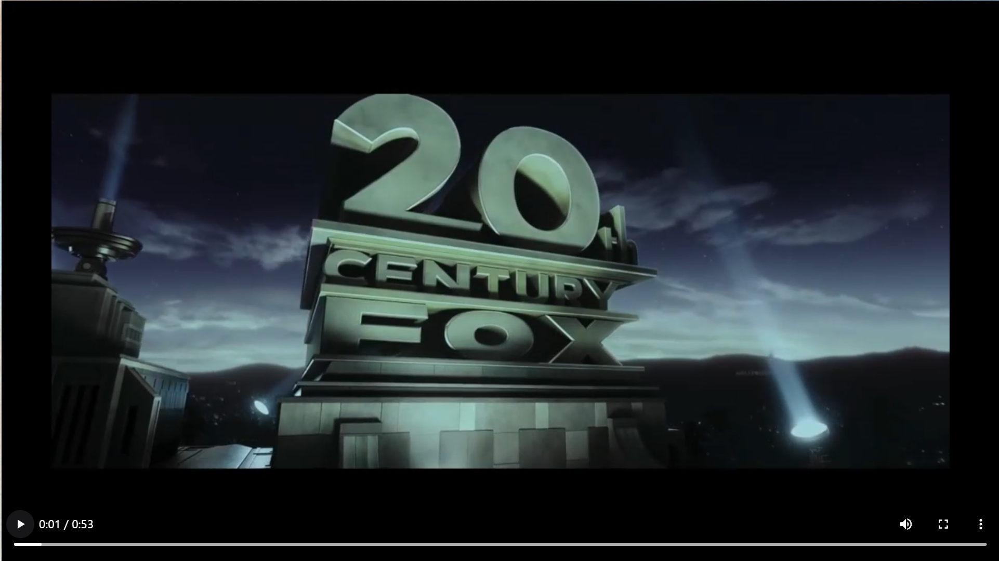
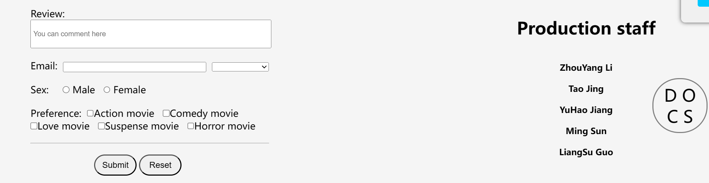

We have adopted a warm tone design style for the homepage, which can bring a better visual experience to people.
We have designed a vertically arranged sidebar on the left side, as we are creating web pages related to movies. Therefore, the sidebar mainly includes movie categories such as love, action, suspense, and horror. The top and bot keys have also been designed to make it easier for users to browse and navigate other parts of the websiteThere is a music player on the right side, where you can listen to the songs we have prepared for you while searching for your favorite movie
There is a search bar designed at the top of the website, where you can search for the movies you want to watch

Afterwards, the webpage will redirect to this page


You can provide feedback on your ideas here, and if you are willing, you can also leave your own email for us to contact you easily（3）We want to develop a time system to display real-time time and date for our plan to improve the webpage
Introducing a personalized recommendation system that recommends relevant movies, directors, actors, etc. based on user preferences and viewing history, providing more targeted recommendation content to enhance user experience
Establish an online video platform that allows users to watch movies and TV shows through the website, providing high-definition streaming and multilingual subtitle options, and providing users with a more convenient viewing experience